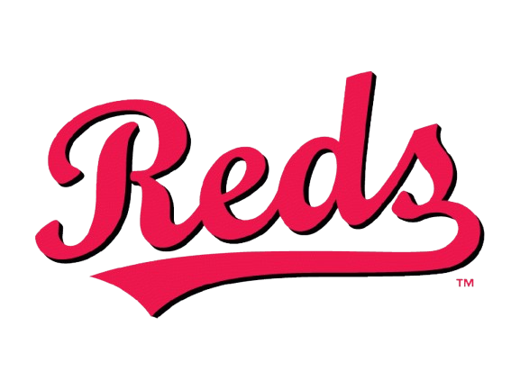
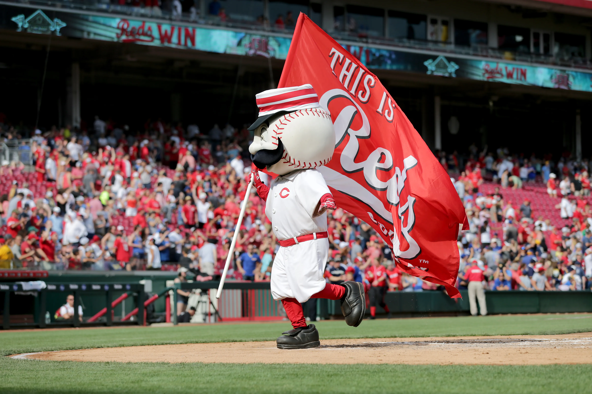

Welcome to Reds World Series
This website is dedicated to the Cincinnati Reds and their World Series wins. Explore the history of the team and legendary players who have contributed to the Reds' success over the years. Click on the links above to learn more about each championship year. The lineup cards on each page show the player with the most games played at each position for that year.
 The Cincinnati Reds are one of the most historic and storied franchises in all of Major League Baseball, often celebrated as the first professional baseball team. Founded in 1869 as the Cincinnati Red Stockings, they became the first openly professional club, paying all of their players a salary and setting the foundation for organized professional baseball. Over the decades, the Reds have built a rich legacy filled with iconic players, memorable moments, and championship glory. Their early years established Cincinnati as a baseball city, and by the time the modern Reds joined the National League in 1890, the team had already carved out a reputation for innovation and competitiveness. The franchise’s golden era came during the 1970s with the rise of “The Big Red Machine,” one of the most dominant dynasties in baseball history. Led by legends such as Johnny Bench, Joe Morgan, Tony Pérez, and Pete Rose, the Reds captured World Series titles in 1975 and 1976, playing a fast-paced, powerful, and intelligent brand of baseball that defined the decade. The team’s success continued with another World Series championship in 1990, further cementing its place among baseball’s elite organizations. Beyond championships, the Reds are known for their deep connection to their fans and the city of Cincinnati — home to baseball’s first Opening Day parade and one of the most passionate baseball communities in the nation. From Crosley Field to Riverfront Stadium and now Great American Ball Park, generations of Reds fans have witnessed a blend of tradition and evolution that reflects the heart of America’s pastime. The Cincinnati Reds aren’t just a baseball team; they are a living piece of history, representing the sport’s origins, growth, and enduring spirit.